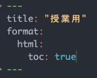
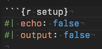
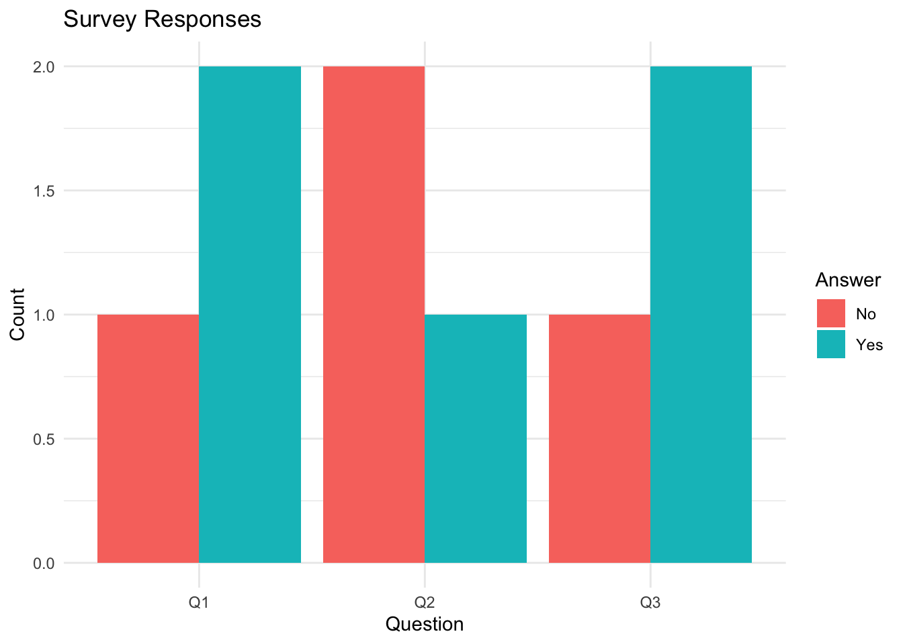

![]()
| skim_type | skim_variable | island | n_missing | complete_rate | factor.ordered | factor.n_unique | factor.top_counts | numeric.mean | numeric.sd | numeric.p0 | numeric.p25 | numeric.p50 | numeric.p75 | numeric.p100 | numeric.hist |
|---|---|---|---|---|---|---|---|---|---|---|---|---|---|---|---|
| factor | species | Biscoe | 0 | 1.0000000 | FALSE | 2 | Gen: 124, Ade: 44, Chi: 0 | NA | NA | NA | NA | NA | NA | NA | NA |
| factor | species | Dream | 0 | 1.0000000 | FALSE | 2 | Chi: 68, Ade: 56, Gen: 0 | NA | NA | NA | NA | NA | NA | NA | NA |
| factor | species | Torgersen | 0 | 1.0000000 | FALSE | 1 | Ade: 52, Chi: 0, Gen: 0 | NA | NA | NA | NA | NA | NA | NA | NA |
| factor | sex | Biscoe | 5 | 0.9702381 | FALSE | 2 | mal: 83, fem: 80 | NA | NA | NA | NA | NA | NA | NA | NA |
| factor | sex | Dream | 1 | 0.9919355 | FALSE | 2 | mal: 62, fem: 61 | NA | NA | NA | NA | NA | NA | NA | NA |
| factor | sex | Torgersen | 5 | 0.9038462 | FALSE | 2 | fem: 24, mal: 23 | NA | NA | NA | NA | NA | NA | NA | NA |
| numeric | bill_length_mm | Biscoe | 1 | 0.9940476 | NA | NA | NA | 45.25749 | 4.7727314 | 34.5 | 42.00 | 45.80 | 48.70 | 59.6 | ▂▅▇▃▁ |
| numeric | bill_length_mm | Dream | 0 | 1.0000000 | NA | NA | NA | 44.16774 | 5.9535266 | 32.1 | 39.15 | 44.65 | 49.85 | 58.0 | ▅▇▆▇▁ |
| numeric | bill_length_mm | Torgersen | 1 | 0.9807692 | NA | NA | NA | 38.95098 | 3.0253180 | 33.5 | 36.65 | 38.90 | 41.10 | 46.0 | ▅▆▇▆▂ |
| numeric | bill_depth_mm | Biscoe | 1 | 0.9940476 | NA | NA | NA | 15.87485 | 1.8207214 | 13.1 | 14.50 | 15.50 | 17.00 | 21.1 | ▇▇▃▃▁ |
| numeric | bill_depth_mm | Dream | 0 | 1.0000000 | NA | NA | NA | 18.34435 | 1.1331159 | 15.5 | 17.50 | 18.40 | 19.00 | 21.2 | ▁▃▇▅▁ |
| numeric | bill_depth_mm | Torgersen | 1 | 0.9807692 | NA | NA | NA | 18.42941 | 1.3394468 | 15.9 | 17.35 | 18.40 | 19.25 | 21.5 | ▃▇▆▃▃ |
| numeric | flipper_length_mm | Biscoe | 1 | 0.9940476 | NA | NA | NA | 209.70659 | 14.1422683 | 172.0 | 199.50 | 214.00 | 220.00 | 231.0 | ▁▃▁▇▅ |
| numeric | flipper_length_mm | Dream | 0 | 1.0000000 | NA | NA | NA | 193.07258 | 7.5073659 | 178.0 | 187.75 | 193.00 | 198.00 | 212.0 | ▃▇▇▅▂ |
| numeric | flipper_length_mm | Torgersen | 1 | 0.9807692 | NA | NA | NA | 191.19608 | 6.2322375 | 176.0 | 187.00 | 191.00 | 195.00 | 210.0 | ▂▅▇▃▁ |
| numeric | body_mass_g | Biscoe | 1 | 0.9940476 | NA | NA | NA | 4716.01796 | 782.8557429 | 2850.0 | 4200.00 | 4775.00 | 5325.00 | 6300.0 | ▂▅▇▇▃ |
| numeric | body_mass_g | Dream | 0 | 1.0000000 | NA | NA | NA | 3712.90323 | 416.6441116 | 2700.0 | 3400.00 | 3687.50 | 3956.25 | 4800.0 | ▂▆▇▃▂ |
| numeric | body_mass_g | Torgersen | 1 | 0.9807692 | NA | NA | NA | 3706.37255 | 445.1079402 | 2900.0 | 3337.50 | 3700.00 | 4000.00 | 4700.0 | ▅▇▇▅▂ |
| numeric | year | Biscoe | 0 | 1.0000000 | NA | NA | NA | 2008.09524 | 0.7833453 | 2007.0 | 2007.00 | 2008.00 | 2009.00 | 2009.0 | ▆▁▇▁▇ |
| numeric | year | Dream | 0 | 1.0000000 | NA | NA | NA | 2007.98387 | 0.8552456 | 2007.0 | 2007.00 | 2008.00 | 2009.00 | 2009.0 | ▇▁▆▁▇ |
| numeric | year | Torgersen | 0 | 1.0000000 | NA | NA | NA | 2007.92308 | 0.8365699 | 2007.0 | 2007.00 | 2008.00 | 2009.00 | 2009.0 | ▇▁▆▁▆ |
Ⅰ. 前回の振り返り
- 前回の「授業の感想」（別紙参照）
- 初回アンケート
Ⅱ. 前回の積み残しとおさらい
1. 積み残し
2. おさらい
- パッケージを追加して、使ってみよう
Console（左下のパネル）に以下のコードを入力して実行（Enter）
install.packages("gt")
install.packages("skimr")
install.packages("palmerpenguins")-
palmerpenguins: 今日の標準的なサンプルデータセットです
- base Rに標準搭載されているiris（前回、散布図作成に使ったもの）は、カラム名に.が入っていたり、欠損値がないなどの理由で、学習用にはふさわしくないと判断されています
- gt): 簡単に表が作れます
- skimr: 簡単にデータの特徴を確認できます
Souce Pane（左上のパネル）に以下のコードを入力して実行（Enter）。入力が不慣れな人はコピー＆ペーストでもオッケー
Ⅲ. R Studioの見た目を変えよう（ソースペイン）
- コードを書くうえで、視認性はとても大切です
- 文字の配色を変えられます
- メニュ > Tools > Global Options > Appearance > Editor Theme
- 私はrstudio-themesからダウンロードしたrscodeioをaddで追加しています
- メニュ > Tools > Global Options > Appearance > Editor Theme
- 不可視文字を表示できます
- メニュ > Tools > Global Options > Code > Display > Show whitespace charactersにチェック / Indentation guides:から適当なものを選択
- themeによってはIndentation guidesが適用されません（rscodeioも適用対象外）


Ⅳ. markdownとチャンク
- quartoの基本構成
- YAML; markdown; チャンク
- YAML
- タイトルだけでなく、ページの出力形態などを統御（詳しくは別途説明）
1. YAML
YAMLを改変して､目次を表示させよう（目次を付けると見出しレベルを意識しやすくなり､論理的な構成になります）

YAMLを改変して､氏名と日付を入れましょう
2. markdown
- markdown:
- YAMLとチャンク以外はmarkdownエリア
- 簡易的記述法 cf. markup (html言語)
- 箇条書き（数字またはハイフン）
- 見出し（ハッシュ#）
- ハッシュの数で見出しレベルが変わる
- 1ハッシュが見出しレベル1
- 引用: >
- URL: 文字列
- 画像：

- 上の2行は下記のように入力しています
教科書69ページ図2.1を参照しながら､適当に見出しを入れて､Outline（画面右上）を表示させてみよう
チャンク内でハッシュはコメントアウト（プログラムの一部を無効化する；メモとする）を意味します
見出しのフォントサイズや強調のフォント色などは､CSSで統御します。別途説明します
ほとんどの場合､解析結果を再現したいと思う人は､今から半年か一年後の自分自身です（ヒーリー，キーラン (2021)）
- ➡ コードとメモをしっかりと残すことが重要
3. setupチャンク
- 一つのquartoファイルのなかでグローバル（すべてのchunk）に適用したいものがあります。library関数やデータの読み込みなどがその典型です。通常のchunkとは別にセットアップ用のチャンクを作ります
- YAMLの次にsetupチャンクを作るのが一般的です
-
おさらいで作ったチャンクをsetupチャンクに変えよう
- 「penguins |> # ペンギンについてのデータを分析します」以降はデータを分析しているコードなので、独立したチャンクに入れ直そう

- 「r半角アキsetup」とするだけ
- （シャープと縦棒＊違う動作をしてしまうので入力しません）echo: false：「コードは実行されますが、出力にはコード本体を表示しない」オプション（通常、setupチャンクはコードを示す必要がないため）
- （シャープと縦棒）output: false：「出力（結果）を非表示にする」オプション」
- ➡ コードも表示されない、実行結果も表示されない。でも、実際には裏でちゃんと実行されている
Ⅴ. 基本的な流れと用語
1. 基本的な流れ：dplyrとggplot
flowchart TB
A([データの加工 <br> <strong>dplyr</strong> <br> 例 select filter]) --- B([データの可視化 <br> <strong>ggplot2</strong> <br> 例 geom_bar])


2. 用語
- パッケージとファンクション（関数）
- Posit Cheatsheets（別紙）参照
上記のサイトのチートシートには､日本語化されているものもあるが､情報が古いので注意
- オブジェクト
- 変数（variable）
- 読み込んだデータ
- 関数（function）
- 代入したデータ（ヒーリー，キーラン (2021), 「2.3.1 すべてに名前がある」）
- データフレーム（df）
- 行列からなるデータ
- ある列のデータの型（後述）は一つのみ
- 例：天気「晴れ；曇り；雨；嵐」➡ character型（数字が入っていたらおかしい）
- 例：気温「20; 25; 30」➡ numeric型（文字データが入っていたらおかしい）
3. 代入
- 「<-」はデータを加工して新しいオブジェクトを作ることを意味します
- 同じオブジェクト名を指定する場合、オブジェクトを上書きすることを意味します
palmerpenguinsのデータセットで実践
- palmerpenguinsのデータから’island’の列だけを取り出します（view関数で確認）
- 代入していませんので、selectしたpenguinsのデータはパイプが切れたところで終わりです（新しくpenguinsオブジェクトを操作すると、すべてのデータからはじまります）
- palmerpenguinsのデータから’island’の列だけを取り出し、penguins_islandに代入します（view関数で確認）
- penguins_island はselectされたデータフレームになりました
- penguinsはそのままです
- palmerpenguinsのデータから’island’の列だけを取り出し、penguinsに代入します（view関数で確認）
- データを上書きしました（メモリ上）
- 元データを読み込みし直さないと元データどおりになりません
- packageの場合はpackageの読み込み
- csvやexcelファイルの場合はファイルの読み込み
penguins |> view()- 元のデータに戻すには明示的に再代入する必要があります
TipTips | 代入演算子（<-）のショートカット
- チャンク内で
- Win: Alt + 「-」キー
- Mac: Option + 「-」キー
4. 整然データと雑然データ
⑴ 整然（tidy）データ
- 各変数は独立した列で表現される
- 観測した値は1行に記録される
- 観測データの集合はテーブルを表現する
（ヒーリー，キーラン (2021), 「付録A.1.3「Tidyデータ」329-332ページ）
表A.1, A.2, A.3を見比べてみよう（カラム名に注目）
以下の二つの表も見比べてみよう（カラム名に注目）
- 一般的なデータは横持ちデータ
- 人間にとって理解しやすい
- コンピュータは縦持ちデータの方が理解しやすい
- わかりやすいカラム名
- 少ないカラム数
- R（tidyverse）ではpivot_longer/pivot_wider関数を使って変換する
- 図「初回アンケート（縦持ちデータ）」は､一人の回答者データを10行に展開している
df_初回アンケート_long <-
df_初回アンケート |> # 代入（ 「<-」代入演算子）
mutate(across(everything(), as.character)) %>% # すべての値を文字形式にする
pivot_longer(
cols = starts_with("Q"), #カラム名が「Q」から始まる列を軸に変換
names_to = "質問", # カラム名から､新しく作成するカラム名
values_to = "回答" # 値から､新しく作成された値のカラム名
)
df_初回アンケート_long |> view()- 横持ちデータかた縦持ちデータに変換した場合、データフレームが大きく変更していますので、新しいオブジェクト（代入）するのが一般的です。また、オブジェクト名に「_long」とするのが一般的です
この操作は難しいので、いま理解できなくてもまったく問題ありません。差し当たり、コンピュータが理解しやすいデータと、人間が理解しやすいデータ（表）が違うことだけ理解しましょう
TipChat GPTを活用しよう
googleフォームで利用者アンケートを実施しました。集計結果は横持ちデータです。例示を交えて縦持ちにする方法を教えてください。r言語（tidyverse）でお願いします。またそのデータを使って､ggplotで図を作ってください。
- 以下のコードはChat GPTが教えてくれたものです
Code
# サンプルデータの作成
library(tidyverse)
data <- tibble(
respondent_id = c(1, 2, 3),
Q1 = c("Yes", "No", "Yes"),
Q2 = c("No", "Yes", "No"),
Q3 = c("Yes", "No", "Yes")
)
# データを縦持ちに変換
data_long <- data %>%
pivot_longer(cols = starts_with("Q"),
names_to = "Question",
values_to = "Answer")
# ggplot2で棒グラフを作成
ggplot(data_long, aes(x = Question, fill = Answer)) +
geom_bar(position = "dodge") +
labs(title = "Survey Responses", x = "Question", y = "Count") +
theme_minimal()
⑵ 雑然（messy）データ
- 整然データではないデータ
- 上記に加え､不要な空白行（セル）
コンピュータが理解できるデータ形式は、1行目がカラム名、2行目以降が値であることを特に覚えておきましょう。Rに限りませんが、Rなどのプログラム系の統計ソフトで指示する対象は「カラム名」です。例えば一つのデータに同じカラム名があると動かない、もしくは強制的にカラム名が変更（メモリ上。元ファイルはそのまま）されます
Ⅵ. データの型
- すべてのオブジェクトは型（クラス）をもつ
- R（tidyverse）がデータを読み､適切と思われる型を割り当てる
- 重要な型
- numeric（数字）
- character（文字）
- factor（ファクター（因子）：レベルを設定できる）
- logical（true / false）
- data.frame（baseRのテーブル形式）
- tibble（tidyverseのテーブル形式）
Note同じ文字でもデータの型が違う可能性がある
- numeric/character/factor
- ggplotで特に問題になります
- 例えば散布図はnumeric（数字）であることが基本なので、数字以外の型の場合、プロットできません
penguins |>
str()tibble [344 × 8] (S3: tbl_df/tbl/data.frame)
$ species : Factor w/ 3 levels "Adelie","Chinstrap",..: 1 1 1 1 1 1 1 1 1 1 ...
$ island : Factor w/ 3 levels "Biscoe","Dream",..: 3 3 3 3 3 3 3 3 3 3 ...
$ bill_length_mm : num [1:344] 39.1 39.5 40.3 NA 36.7 39.3 38.9 39.2 34.1 42 ...
$ bill_depth_mm : num [1:344] 18.7 17.4 18 NA 19.3 20.6 17.8 19.6 18.1 20.2 ...
$ flipper_length_mm: int [1:344] 181 186 195 NA 193 190 181 195 193 190 ...
$ body_mass_g : int [1:344] 3750 3800 3250 NA 3450 3650 3625 4675 3475 4250 ...
$ sex : Factor w/ 2 levels "female","male": 2 1 1 NA 1 2 1 2 NA NA ...
$ year : int [1:344] 2007 2007 2007 2007 2007 2007 2007 2007 2007 2007 ...- species（ペンギンの種類）: Factor w/ 3 levels “Adelie”,“Chinstrap”
- bill_length_mm（ペンギンのくちばしの先端から根元までの長さ（ミリ単位））: num(numeric)；[1:344] このベクトルには全部で344個の値が入っている
- NA：欠損値（データが取れないことはよくあります。NAがある場合、特殊な操作が必要になる（NAをどう扱うか明示的にコードを書く必要がある）ので気をつけましょう）
- year：int（整数型）
Ⅶ データの入手先（お勧め）
1. ckan（シーカン）
CKANは世界をリードするオープンソースのデータポータルプラットホームです。
CKANはデータをアクセス可能で使用可能にするための完全に枠を超えたソフトウェアソリューションです。データをストリームラインで公開、共有、発見、使用するためのツールを提供しています(データストレージや頑強なデータAPIの提供も含みます)。CKANはデータをオープンにして公開したいと思っているデータ公開者(国や地方行政、会社や組織)のために作られています。
CKANは世界中の行政やユーザグループによって使用されています。イギリスの data.gov.uk、EUの publicdata.eu、ブラジルの dados.gov.br、オランダの政府ポータル、US、UK、アルゼンチン、フィンランド等の地方自治体のように、地方、国、国際的な行政を含む、様々な公的あるいはコミュニティのデータポータルの力となっています。
- Cf. 「CKANについて - data.go.jp」（加藤文彦）Link
⑴ ckan: 金沢市
- tidyなデータ例：
東京都のckanも充実しています。特にcsvファイルで提供されているデータは、tidyデータで、情報量が多く、よいものが多いです
⑵ 東京大学社会科学研究所
⑶ 文部科学省
⑷ 統計局
⑸ RESAS地域経済分析システム
-
RESAS地域経済分析システム
- ダッシュボードが基本。「ダウンロード」が表示されるもののみデータ入手可能
- データ自体は有益だが、地域別に集計することが前提とされているため、使い勝手はよくない
- ダッシュボードが基本。「ダウンロード」が表示されるもののみデータ入手可能
2. 観測・実験装置
-
福島県では、東京電力福島第一原子力発電所の事故後、原子力災害本部長から福島県知事に対し野生鳥獣（イノシシ、ツキノワグマ、キジ、ヤマドリ、カルガモ、ノウサギ）の肉の摂取及び出荷制限の指示があり、県内で捕獲された野生鳥獣の体内における放射性核種濃度測定調査の結果についてお知らせをしています。
-
- 生態学にかかわるオープンデータのリンクがまとめられています。アカウント登録が必要なサイトがほとんどですが、よいデータが集まっているような印象を受けました。研究分野が近い受講生はアカウント登録をしてデータを入手する価値があるのではないかと思います。
Ⅷ. 実習
1. オブジェクト､代入､データの型
教科書77ページから87ページのコード（緑色の背景をもつ直前の文字列）を入力し､実行してみよう
- 代入は以下のコードのように水準を設定したい場合にも便利です（setupチャンクに一度書けば、続くチャンクはこのオブジェクトを）
回答_身につく_levels <- c("かなり身についた", "ある程度身についた", "あまり身につかなかった", "身につかなかった")2. コードへの忍耐とR Studioの恩恵
忍耐強くあることが肝心です。エラーはいつか起こるもので､心配することはありません。……コードの誤りを修正する過程で､言語の仕様を理解することにつながります（ヒーリー，キーラン (2021), 「2.4「自分自身､Rへの忍耐」88-89ページ）
- シンタックスハイライト
- 自動補完
- インデント
3. （時間に余裕がある人だけ）：横持ちデータと縦持ちデータ
-
整然（tidy）データを実践してみよう
- サンプルデータはGoogle Driveから入手できます
Ⅸ. 宿題
1. 授業の感想
Notenote | 回答先と締め切り
- 回答先：Google Forms
- 締め切り：2025年4月20日（金）23時59分まで
2. 可視化したいデータ
- Q1. ggplotを使って可視化したいデータをアップロードして下さい（csvかexcelファイル）
- 手元にデータがない場合は､こんなデータがある／作れそうだ､というようなことを書いて下さい
- 1行目はカラム名、2行目以降が値のみのもの（2行目にカラム名の補則や空き行などあると、操作が難しくなります）
- 「データの入手先（お勧め）」を参考にして下さい
- Q2.このデータと､このデータから作りたい図について簡単に説明して下さい
Notenote | 回答先と締め切り
- 回答先：Google Forms
- 締め切り：2025年4月23日（水）10時30分まで
可視化したいデータについて見当がつかない場合は､早め（できれば今日の授業後）に教員に相談してください
ggplot2 extensions - galleryやThe R Graph Galleryを見て､作りたい図のイメージを膨らませて下さい
引用文献
ヒーリー，キーラン (2021) 『データ分析のためのデータ可視化入門』, 講談社.
Copyright
苅谷千尋